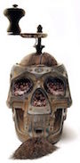

About
"Coffee should be black as night, strong as death, and bold as the sea."The Black Beard Coffee Company was formed in 2015 in the small town of Greenwood. In the wee hours of the morn Captain Black Beard and his faithfull crew began to prepare their ship for sail, in search of new land to plunder. With food and sleep a scarce luxury, the crew was moving at a crawl. After a brush with the East India Company the ship was stock full of coffee beans, and spices. After many sleepless nights the crew as well as Captain Black Beard had given up grinding the coffee beans, and began chewing them. This lead to the discovery of the strongest coffee ever brewed, Black Beard Coffee. Grinding with the teeth released more of the beans natural potency and caffeine than traditional grinding. After much consideration, and many a plank walks, the decision was made to package, ship, and trade the beautifully crafted product. Thus, Black Beard Coffee Co. was born.
Shop Merch
- Black Beard Double Walled Travel Tumbler
- Black Beard Ceramic Mug
- Siren Espresso Shot Cup
- Cthulhu Hand Crafted Mug
- Cthulhu Themed Espresso Machine
- Black Beard Hoodie
Images
